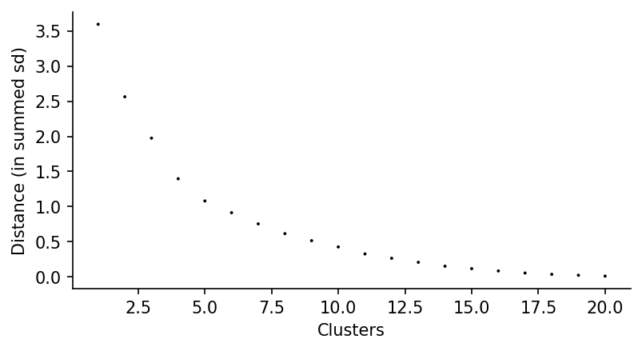
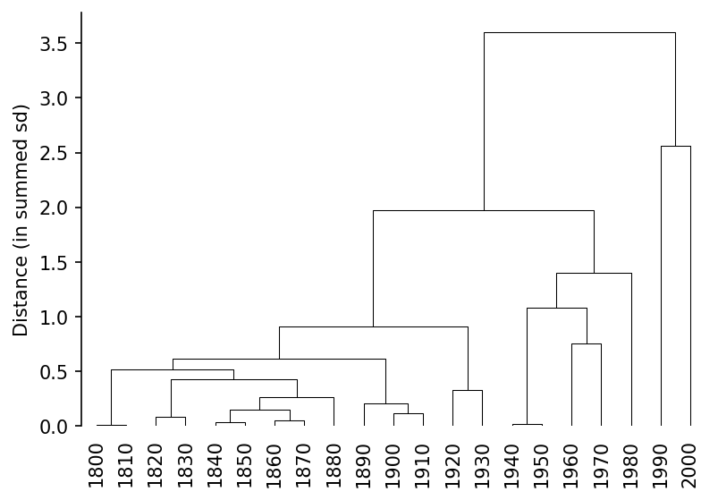
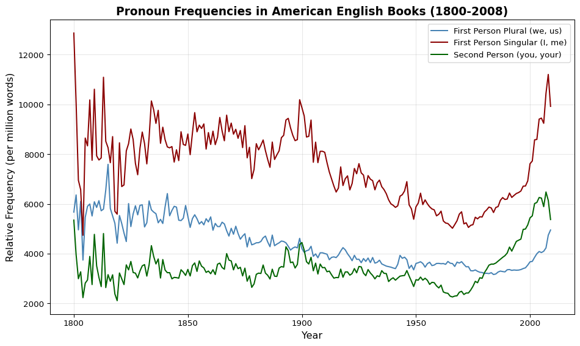

Language changes over time—words rise and fall in popularity, meanings shift, new expressions emerge while old ones fade. Time series analysis tracks these changes systematically, revealing patterns that span decades or centuries. Unlike synchronic analysis (studying language at a single point in time), diachronic analysis examines language evolution through historical data.
Why Time Series Analysis Matters
Understanding linguistic change reveals:
Semantic drift: How word meanings evolve (e.g., “silly” from “blessed” to “foolish” through a process called pejoration)
Cultural shifts: Frequency changes reflecting social movements (e.g., “chairperson” vs. “chairman,” etc.)
Genre evolution: How disciplinary or literary conventions change
Periodization: Natural boundaries in linguistic history vs. arbitrary century divisions
Hypothesis testing: Validating claims about historical trends with quantitative evidence
This tutorial covers:
Google Ngrams: Accessing and interpreting historical frequency data
Visualization: Scatterplots, smoothing, and trend interpretation
Massive scale: 8+ million books, multiple language varieties—unparalleled temporal and lexical coverage
Sparse early data: Pre-1800 data is limited and OCR quality varies
Variety-specific: Can filter by British English, American English, fiction, etc.
N-gram support: 1-grams (single words) through 5-grams (five-word sequences)
Normalized frequencies: Counts adjusted for corpus size changes over time
Critical limitations:
No sampling frame: We don’t know the population being sampled—what proportion of all published books? Which publishers, regions, or topics are over/under-represented?
No metadata: Limited information about author demographics, book genres, publication contexts, or intended audiences
Selection bias: What gets digitized reflects library holdings, copyright status, and Google’s partnerships—not a representative sample of published materials
Copyright gaps: 20th-century coverage has holes due to copyright restrictions
Not representative of spoken language: Books ≠ everyday speech
Genre imbalance over time: Earlier periods overrepresent religious and legal texts; later periods tilt toward popular fiction and self-help
OCR errors: More common in older materials (damaged pages, archaic typefaces, non-standard fonts)
Frequency ≠ cultural salience: A rare word can be culturally important; a frequent word can be semantically empty
7.3 Fetching and Exploring Data
7.3.1 Basic Data Retrieval
The google_ngram() function streams data directly from Google’s repositories, filtering as it downloads to minimize memory usage:
# Fetch lemmatized forms of "quiz"word_forms = ["quiz", "quizzes", "quizzed"]quiz_year = google_ngram(word_forms, variety="eng", by="year")quiz_year.head(10)
shape: (10, 4)
AF
Token
Year
RF
i64
list[str]
i32
f64
0
["quiz", "quizzes", "quizzed"]
1505
0.0
0
["quiz", "quizzes", "quizzed"]
1506
0.0
0
["quiz", "quizzes", "quizzed"]
1507
0.0
0
["quiz", "quizzes", "quizzed"]
1508
0.0
0
["quiz", "quizzes", "quizzed"]
1509
0.0
0
["quiz", "quizzes", "quizzed"]
1510
0.0
0
["quiz", "quizzes", "quizzed"]
1511
0.0
0
["quiz", "quizzes", "quizzed"]
1512
0.0
0
["quiz", "quizzes", "quizzed"]
1513
0.0
0
["quiz", "quizzes", "quizzed"]
1514
0.0
Understanding the output:
Year: Temporal unit (year or decade depending on by parameter)
AF: Absolute frequency (raw count of occurrences)
Total: Total word count in corpus for that period
RF: Relative frequency (per million words)
The function combines all forms in word_forms into a single frequency count—effectively lemmatizing the data.
Early volatility (pre-1800): Wide scatter, extreme outliers—reflects sparse data and OCR unreliability
Smoothing line: LOESS (locally estimated scatterplot smoothing) or GAM (generalized additive model) fit showing underlying trend beneath yearly noise. Think of it as a moving average that adapts to local patterns.
Modern surge (post-1950): Dramatic frequency increase—but what does it mean?
Comparing to Google’s Ngram Viewer
Google’s online interface provides a different visualization:
from IPython.display import IFrameIFrame("https://books.google.com/ngrams/interactive_chart?content=quiz,+quizzes,+quizzed&year_start=1500&year_end=2022&corpus=en&smoothing=3", width=900, height=500)
Note the differences: Google applies 3-year smoothing by default, hiding year-to-year variability. Which view is more “accurate”? Neither—they emphasize different aspects of the same data.
7.4.2 Triangulation with External Sources
Frequency data alone doesn’t explain linguistic history. Always triangulate with other sources:
Oxford English Dictionary: Check first attestation dates, sense developments
Historical events: Wars, social movements, technological innovations
Genre shifts: Changes in what kinds of books get published
For “quiz”: The OED shows first use ~1780s as a noun meaning “odd person,” later “test/examination.” The modern surge post-1950 likely reflects the rise of educational testing culture, not the word’s initial coinage.
7.5 Computational Reasoning: From Patterns to Insights
7.5.1 The Interpretation Workflow
1. Observe the pattern: Quiz frequencies rise dramatically after 1950
2. Filter and focus: Remove sparse early data (pre-1800) to avoid OCR noise
3. Ask why it matters: - Does this reflect educational expansion (more schools = more quizzes)? - Genre shift (rise of textbooks and educational publishing)? - Semantic change (new meanings emerge)? - Publication bias (earlier books less likely to discuss pedagogy)?
4. Test competing hypotheses: Compare against related words (“test,” “exam,” “assessment”), check different corpora (fiction vs. academic), examine collocates
Traditional periodization uses convenient but arbitrary divisions: centuries, half-centuries, decades. These bins assume linguistic change aligns with calendar boundaries—but does it?
Variability-Based Neighbor Clustering (VNC)(gries2008variability?; Gries and Hilpert 2012) offers an alternative: let the data reveal its own period structure through hierarchical clustering based on frequency similarity.
7.6.2 VNC Methodology
Core idea: Time periods with similar frequencies cluster together. Abrupt frequency changes create cluster boundaries.
Why temporal order matters: Unlike standard hierarchical clustering, VNC cannot rearrange time points. The year 1850 must stay between 1840 and 1860. This constraint ensures clusters represent actual historical periods, not just similar frequencies from disconnected eras. It’s clustering within the flow of time, not clustering that ignores temporal sequence.
Step 1: Calculate pairwise distances between adjacent time points based on standard deviation of frequencies
Step 2: Hierarchically cluster time points, maintaining temporal order (unlike standard clustering)
Step 3: Cut the dendrogram at a height that creates meaningful periods
7.6.3 Scree Plots and Cluster Selection
How many clusters (periods) should you create? The scree plot shows variance explained by different cluster counts:
quiz_decade_ts.timeviz_screeplot();

Interpreting scree plots:
Elbow: Point where adding more clusters shows diminishing returns
No definitive cutoff: You must make an analytical judgment
Context matters: Known historical events, research questions, and interpretive goals guide decisions
7.6.4 Dendrogram Visualization
quiz_decade_ts.timeviz_vnc();

Reading dendrograms:
Vertical axis: Distance (dissimilarity) between clusters
Horizontal axis: Time periods (decades) in order
Height of joins: Larger distance = more dissimilar periods being merged
Leaf clustering: Decades that cluster early are highly similar
Looking at the dendrogram and scree plot together suggests 3-4 natural periods for “quiz” usage from 1800-2020.
Interpreting results: Each cluster represents a distinct “period” of usage. If clusters align with known events (1940s-1950s = post-WWII educational expansion), that strengthens interpretation. If they don’t align, you’ve discovered something new about the data’s structure.
7.7 Case Study: Pronouns and Individualism
7.7.1 The Research Question
Twenge et al. (2013) claimed that pronoun frequency changes in American books (1960-2008) reflect increasing individualism:
“The use of first person plural pronouns (e.g., we, us) decreased 10%, first person singular pronouns (I, me) increased 42%, and second person pronouns (you, your) quadrupled.”
The interpretation: These linguistic shifts mirror psychological changes—Americans becoming more individualistic, less collectivist.
Critical questions:
Does extending the time frame (1800-2008) change the story?
Are pronoun frequencies a valid proxy for cultural psychology?
What alternative explanations might account for the same patterns?
The original study used a line plot for 1960-2008. Let’s recreate it with the full 1800-2008 time frame:
# Prepare data for matplotlibx = all_pronouns["Year"].to_numpy()y_first_pl = all_pronouns["RF_first_pl"].to_numpy()y_first_sing = all_pronouns["RF_first_sing"].to_numpy()y_second = all_pronouns["RF_second"].to_numpy()# Create multi-line plotplt.figure(figsize=(10, 6))plt.plot(x, y_first_pl, label='First Person Plural (we, us)', color='steelblue', linewidth=1.5)plt.plot(x, y_first_sing, label='First Person Singular (I, me)', color='darkred', linewidth=1.5)plt.plot(x, y_second, label='Second Person (you, your)', color='darkgreen', linewidth=1.5)plt.xlabel('Year', fontsize=12)plt.ylabel('Relative Frequency (per million words)', fontsize=12)plt.title('Pronoun Frequencies in American English Books (1800-2008)', fontsize=14, weight='bold')plt.legend(fontsize=10)plt.grid(True, alpha=0.3)plt.tight_layout()plt.show()

7.7.3 Evaluating the Claims
What the extended time frame reveals:
Long-term context: The 1960-2008 trend may be part of a longer cyclical pattern, not a unidirectional shift. Do pronoun frequencies show a steady rise from 1800, or fluctuations with peaks and troughs?
Genre effects: What if the rise of self-help books, memoirs, and first-person fiction drives “I” increases, not cultural individualism? The rise of confessional writing ≠ the rise of individualistic psychology.
Publication bias: What types of books get digitized and included in Google Books? If Google preferentially digitizes bestsellers and popular nonfiction (heavy on first-person), that skews the data.
Baseline assumption: The study assumes 1960 represents “normal” collectivism. But what if 1960 was an anomaly (post-war conformity), and later decades represent a return to historical norms?
Methodological strengths:
Large-scale data (hundreds of thousands of books)
Clear quantitative pattern (pronouns do change)
Replicable analysis
Methodological weaknesses:
Correlation ≠ causation (linguistic change and psychological change could both be caused by a third factor)
No validation with other cultural measures
Assumes books reflect individual psychology (do they?)
Cherry-picked time frame (1960-2008) may exaggerate trend
The Computational Reasoning Lesson
Time series data is powerful for description but weak for explanation. Frequencies can reveal patterns, but interpreting those patterns requires:
Triangulation: Multiple data sources beyond word counts
Alternative hypotheses: Genre, publication bias, semantic shift
Humility: Acknowledge what your data can and cannot show
The goal isn’t to dismiss quantitative analysis—it’s to use it more carefully, recognizing both its power and its limits.
7.8 When to Use Time Series Analysis
Well-Suited Research Questions
Tracking lexical innovation: When did a new word/phrase emerge and spread?
Semantic change: How do word frequencies correlate with meaning shifts?
Genre evolution: How do disciplinary conventions change over time?
Validating periodization: Do linguistic patterns align with literary/historical periods?
Cultural hypothesis testing: Do proposed social changes have linguistic correlates?
Limitations and Alternatives
When time series analysis struggles:
Causation claims: Frequency correlation doesn’t prove cultural causation
Representativeness: Google Books isn’t representative of all language use
Semantic conflation: High-frequency words have multiple senses; ngrams can’t distinguish them
Rare phenomena: Low-frequency words/phrases produce unreliable time series
Alternative methods:
Close reading: Examine actual usage contexts, not just frequencies
Collocation analysis: Track what words appear with your target over time
Corpus comparison: Compare multiple corpora (spoken vs. written, genres, regions)
Qualitative periodization: Literary history, OED citations, historical events
7.9 Common Pitfalls
1. Ignoring data quality variation over time
Pre-1800 data is sparse and unreliable. Always check scatterplots for volatility and consider filtering early years.
2. Over-interpreting short time frames
The 1960-2008 window may exaggerate trends. Extend time frames when possible to see if patterns are long-term or cyclical.
3. Assuming smoothing reveals “truth”
Smoothing highlights trends but hides genuine volatility. Choose smoothing parameters based on your question, not aesthetics.
4. Conflating frequency with importance
A rare word can be culturally significant. A frequent word can be semantically empty. Frequency is one dimension of importance, not the only one.
5. Neglecting genre and publication bias
What gets published (and digitized) changes over time. The rise of memoirs, self-help, and creative nonfiction affects pronoun frequencies independent of cultural psychology.
6. Making causal claims from correlation
Linguistic change and cultural change may correlate without one causing the other. Both could be caused by third variables (education policy, media technology, economic shifts).
7.10 What to Do After Finding a Trend
Time series analysis generates hypotheses, not conclusions. Here’s how to build on initial findings:
7.10.1 1. Triangulate with Other Data Sources
OED citations: Check historical attestations and sense developments
COHA (Corpus of Historical American English): Compare against a more balanced historical corpus
Historical archives: Newspapers, diaries, letters for validation
Cultural histories: Books on the relevant time period/topic
7.10.2 2. Examine Collocational Changes
If “quiz” frequencies rise post-1950, what does “quiz” collocate with over time?
Collocation shifts reveal how a word is being used, not just how often.
7.10.3 3. Compare Across Varieties and Genres
British vs. American English: Do trends differ?
Fiction vs. academic writing: Genre-specific patterns?
Time-matched subcorpora: Control for publication type
7.10.4 4. Apply VNC to Multiple Words
Does “test,” “exam,” and “assessment” show the same periodization as “quiz”? If yes, strengthens interpretation. If no, “quiz” has a unique trajectory worth investigating.
7.10.5 5. Qualitative Deep Dive
Read actual examples from high-frequency periods:
What senses dominate in each period?
What genres use the word most?
Are there usage patterns invisible to frequency counts?
7.11 Conclusion
Time series analysis transforms language history from anecdote to evidence. By tracking frequencies across decades or centuries, we can:
Validate or challenge claims about linguistic change
Discover unexpected patterns worth investigating
Periodize language history based on data, not calendar convenience
Connect linguistic shifts to cultural, technological, and social changes
The computational reasoning workflow:
Visualize the trend (scatterplot, smoothing, aggregation)
Filter and focus (remove sparse/noisy data, select meaningful time frames)
Periodize (VNC for data-driven boundaries)
Interpret cautiously (frequency shows what changed, not why)
Triangulate (external sources, alternative explanations, qualitative validation)
Remember: quantitative analysis reveals patterns that demand explanation. The numbers show us where to look—close reading, historical context, and theoretical frameworks explain what we find.
Connecting to Mini Lab 7
Mini Lab 7: Time Series provides hands-on practice with Google Ngrams and VNC analysis using Google Colab. The mini lab includes the pronoun case study and guides you through creating publication-quality visualizations.